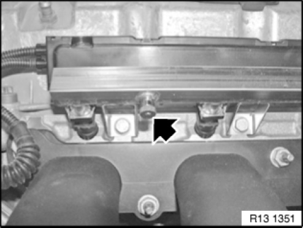
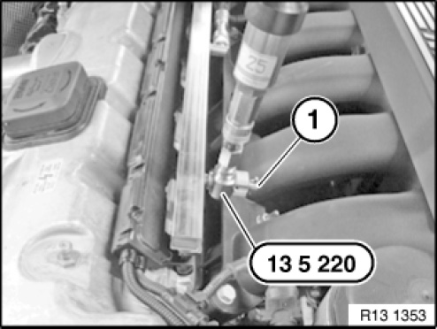
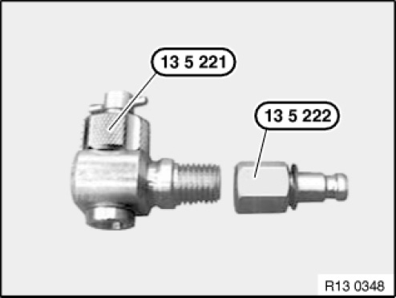
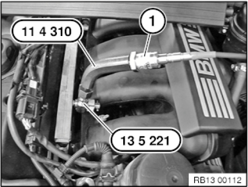

13 31 029 Checking Fuel Pump Delivery Pressure
13 31 029 Check Fuel Delivery Pressure (N51.N52 ,N52K)
Special tools required:

IMPORTANT:
Fuel in fuel lines is under pressure (approx. 5 bar).
Catch and dispose of escaping fuel.

Necessary preliminary tasks:
- Switch off ignition.
- Remove acoustic cover

Remove dust cap (1).

Procedure with the 25 bar pressure sensor:
Connect the set of special tools 13 5 220 (consisting of 13 5 221 and 13 5 222 ) to the pressure sensor of the BMW diagnosis system.
Connect pressure sensor to the BMW diagnosis system or IMIB.
IMPORTANT:
Do not screw in shutoff valve up to mechanical limit position under any circumstances.
This could damage the valve in pressure regulator housing.

Install set of special tools 13 5 220 at injection pipe and tighten knurled nut hand-tight.
Unscrew shutoff valve (1) so that valve in pressure regulator housing is closed.
Establish fuel delivery pressure.
Screw in shutoff valve (1) until a pressure reading is displayed on BMW diagnosis system or IMIB. Read off fuel delivery pressure and compare with values in BMW diagnosis system.

Procedure with the 100 bar IMIB pressure sensor:
For the check of fuel delivery pressure with the 100 bar IMIB pressure sensor only tool 13 5 221 is needed from the set of special tools. Unscrew special tool 13 5 222 from special tool 13 5 221.

Install special tool 13 5 221 at fuel injection pipe and tighten knurled nut hand-tight.
Unscrew shutoff valve so that valve in pressure regulator housing is closed.
Screw onto special tool 13 5 221, the special tool 11 4 310.
Screw IMIB 100 bar pressure sensor on the special tool 11 4 310.
Establish fuel delivery pressure.
Screw in shutoff valve until a pressure reading is displayed on IMIB. Read off fuel delivery pressure and compare with values in BMW diagnosis system.

NOTE:
Removal of the set of special tools
13 5 220 :
- Stop engine.
- Fully unscrew shutoff valve
- Remove set of special tools 13 5 220 from pressure regulator housing
- Catch and dispose of escaping fuel
NOTE:
Read out the fault memory of the DME control unit.
Check stored fault messages.
Delete fault memory.